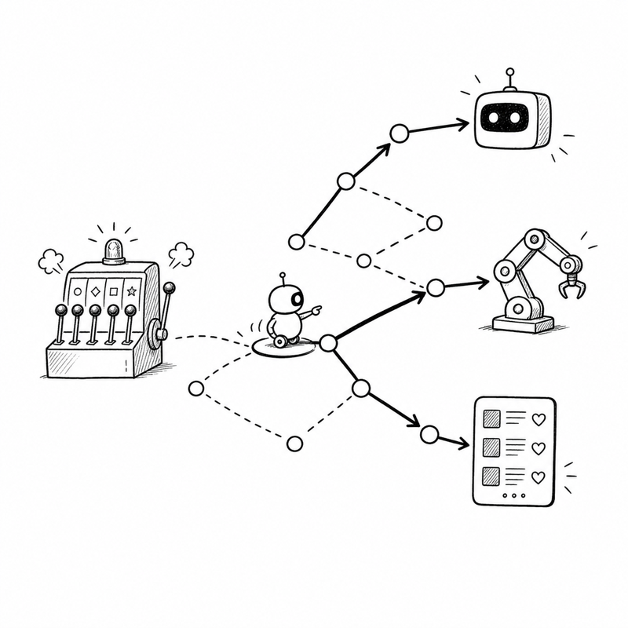

Yuejie Chi
S&DS 6190: Sequential Decision Making: Theoretical Foundations and Modern Applications

Sequential decision making in the face of uncertainty has garnered growing interest in recent years, with successes in a multitude of applications such as recommendation systems, robotics, and AI systems. This course aims to cover important theoretical and algorithmic foundations under the paradigms of bandits and reinforcement learning (RL), and discuss research issues arising from their modern applications in generative AI. We will cover multiple important topics including stochastic bandits, adversarial bandits, planning in Markov decision processes, online and offline RL, policy optimization, and multi-agent RL, gravitating our discussions around issues such as sample complexity, computational efficiency, and function approximation. We will also illustrate how RL is used to enable reasoning and alignment of foundation models, along with related (open) research questions.
Course Syllabus
Recommended Readings
-
Reinforcement Learning: Theory and Algorithms, by Agarwal, Brantley, Jiang, Kakade, and Sun
-
Reinforcement learning: An introduction, by Sutton and Barto
-
Bandit Algorithms, by Lattimore and Szepesvari
-
Reinforcement Learning, lecture notes by Silver
Sample Complexity of Reinforcement Learning: A Non-Asymptotic Perspective, by Chen, Chi, Fan, Li, Wei, and Yan
Course Schedule
This is a provisional schedule and may be updated as the semester proceeds.
| Week | Date | Topic | Recommended Reading | Deliverables |
| 1 | Sep. 8 | Introduction and logistics; stochastic bandits [Lecture 1] | SB, Chapter 1; LS, Chapters 4 and 7 | |
| 2 | Sep. 15 | Adversarial bandits and lower bounds | LS, Chapters 11 and 13-16 | |
| 3 | Sep. 22 | MDP and dynamic programming | Silver, Lectures 1-3; CCFLWY, Chapter 2 | Project proposal 1st draft |
| 4 | Sep. 29 | Simulator setting: evaluation and planning | CCFLWY, Chapter 3 | |
| 5 | Oct. 6 | Online RL | CCFLWY, Chapter 4 | Project proposal 2nd draft |
| 6 | Oct. 13 | Offline RL and imitation learning | CCFLWY, Chapter 5; ABJKS, Chapter 13 | Midterm presentation draft |
| 7 | Oct. 20 | Midterm presentation and peer feedback | ||
| 8 | Oct. 27 | Policy optimization in RL | ABJKS, Chapters 9-10, [Overview] | Project proposal final version |
| 9 | Nov. 3 | Multi-agent RL (MARL) | [V-learning], [Cen Dissertation Part 2] | |
| 10 | Nov. 10 | RLHF | [Ziegler et al], [Ouyang et al], [Rafailov et al] | Project 1st milestone |
| 11 | Nov. 17 | RLVR | [DeepseekMath], [Deepseek R1], [Huang et al] | |
| 12 | Nov. 24 | No class: November recess | Project 2nd milestone | |
| 13 | Dec. 1 | Guest lecture (tentative) | Final presentation draft due | |
| 14 | Dec. 8 | Final project presentation | ||
| Finals | Dec. 15-22 | Final project report due |